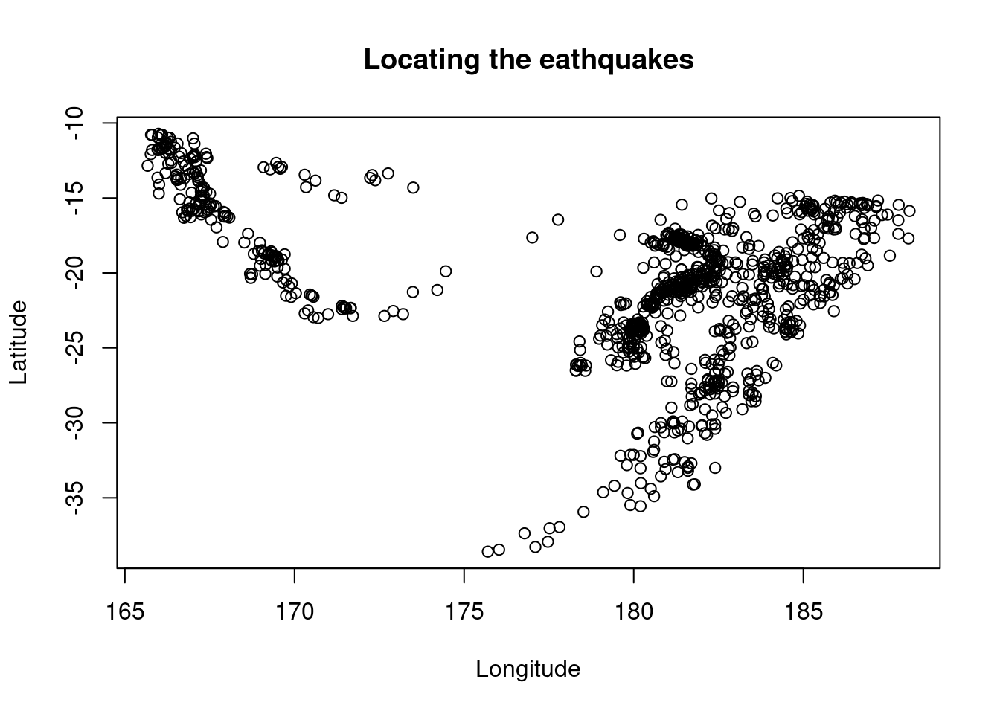
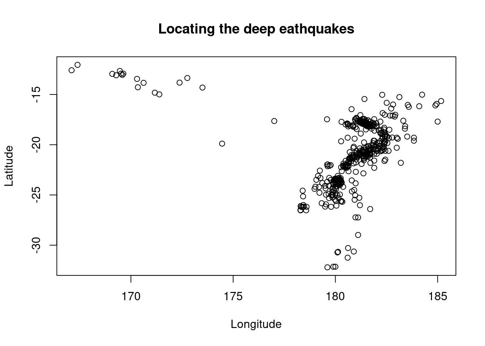

Basic Data Manipulation
Learning objectives
- Understand the context and structure of a dataset before manipulating the data.
- Develop research questions to explore the data.
- Apply basic conditional statements to filter data or create new variables.
- Create new variables based on some conditions.
This semester we will learn methods to answer questions we may have about our data. We will need to make sure that our data is appropriate to answer our research question OR/AND we will need to adjust our research question to use the data that we have.
Start your workflow by uploading the tidyverse package:
1. Making sense of a dataset
Consider the built-in dataset quakes which contains information about earthquakes occurring near Fiji islands since 1964. It is always important to take a quick look at the dataset before doing anything with it:
## [1] 1000## [1] 5## [1] 1000 5The context of our data is very important! Get more information about the dataset by running ?quakes in your console.
Try it! What does one row represent? What does one column represent?
One row represents the occurrence of an earthquake. A column represents a characteristic of each earthquake: where it occurred (latitude and longitude), its depth and magnitude, and how many stations reported it.
What if we don’t know much about earthquakes? To understand the nature of the data we are dealing with, we should understand the context. Here is a citation for a Wikipedia page that describes the terminology around earthquakes: https://en.wikipedia.org/wiki/Earthquake
Also, this dataset focuses on Earthquakes off Fiji so let’s take a look at a map of the Fiji islands:

Try it! In the dataset, we are given the latitude and longitude of the earthquakes. Representing these two variables will help us identify where the earthquakes occurred. Make a plot!
# Make a scatterplot
plot(quakes$long, quakes$lat,
main = "Locating the eathquakes",
xlab = "Longitude", # Longitude should be on the x-axis
ylab = "Latitude") # Latitude should be on the y-axis
Most earthquakes seem to occur around the trenches we see on the picture above.
Now that we have a better idea about what data we have available, we should come up with questions we would like to answer with this dataset.
Try it! Come up with a research question to guide the exploration of this dataset. Are there any limitations in the data that might affect the types of questions we can answer?
One example of a research question: Do earthquakes of greater magnitude tend to occur at deeper depths? Some limitations we should consider: location of the earthquakes (only Fiji islands), data is a “subsample” of a larger dataset (how was the sample made? random?), focus on magnitude above 4, time of the earthquakes (is the dataset still updated and including recent earthquakes?), quality of information (accuracy, consistency), …
Let’s demonstrate some concepts for basic data manipulation while manipulating this dataset.
2. Setting conditions
a. Conditional statements
We can use conditional statements to focus on some parts of the data. Below are some essential comparison operators for setting conditions in R:
==means equality!=means “not equal”<means “less than” while<=means “less than or equal to”>means “greater than” while>=means “greater than or equal to”x %in% yis looking for the value ofxin the objectyis.numeric()is testing if a variable is numeric or notis.character()is testing if a variable contains characters or not
When testing for conditions, we will get a logical value: TRUE or FALSE (also abbreviated T or F). Let’s test some conditions for a value of a number x:
## [1] TRUE## [1] FALSE## [1] FALSEWhat if we test some conditions on a vector?
## [1] TRUE FALSE FALSE FALSE TRUEWe get a vector of logical values. Now, when we have many elements in our vector, wouldn’t it be nice to be able to count TRUE’s and FALSE’s? A logical value of TRUE actually corresponds to a numeric value of 1, while a logical value of FALSE corresponds to a numeric value of 0.
## [1] 2## [1] 0.4The conditional statement v == 4 returned 2 TRUE’s, or 40% of TRUE’s.
b. Connectors
We can also combine logical statements with connectors:
&means that both statements should be TRUE|means that at least one of the statement is TRUE
## [1] TRUE TRUE TRUE TRUE TRUE## [1] FALSE FALSE FALSE FALSE FALSE3. Subsetting data
To subset the observation of our data, we can use the filter function that comes from the tidyverse package. The function follows this structure: filter(dataframe, condition).
# Index the variable mag in quakes for magnitude greater than or equal to 6
filter(quakes, mag >= 6)Try it! Create a subset of quakes which contains earthquakes with a depth greater than 300 km. Save it as deep_quakes in your environment. Are all of these deep earthquakes located in the same area? Hint: check the location with a plot.
# Create a new object and save it in the environment with <-
deep_quakes <- filter(quakes, depth >= 300)
# Update the scatterplot
plot(deep_quakes$long, deep_quakes$lat,
main = "Locating the deep eathquakes",
xlab = "Longitude", # Longitude should be on the x-axis
ylab = "Latitude") # Latitude should be on the y-axis
The earthquakes seem to be scattered around.
4. Creating new variables
To create a new column/new variable in our data, we can use the mutate function (that also comes from the tidyverse package), following this structure: mutate(dataframe, new_var = ...). For example, let’s convert depth from kilometers to miles:
We can decide to create a variable depending on the result of a conditional statement (TRUE or FALSE) with the ifelse function, following this structure: ifelse(condition, value if TRUE, value if FALSE). For example, earthquakes with a depth more than 300 km are considered deep. Let’s create a categorical variable that defines the depth of an earthquake as Deep or Not deep:
# Create a new variable
mutate(quakes, depth_cat = ifelse(depth > 300, "Deep", "Not deep"))
# Note: the variable is not saved in the dataframe
quakesIf we would like to use this new variable then we need to save a new version of the dataframe:
# Save a new dataframe to use the new variable
new_quakes <- mutate(quakes, depth_cat = ifelse(depth > 300, "Deep", "Not deep"))To go beyond just TRUE/FALSE conditions, we can consider the case_when function, following this structure: case_when(condition1 ~ value if TRUE, condition2 ~ value if TRUE, ...). For example, earthquakes with a depth less than 70 km are considered shallow, with a depth more than 300 km are considered deep, and are considered of intermediate depth in between. Let’s create a categorical variable that defines the depth of an earthquake as Shallow, Intermediate, or Deep:
# Update the new dataframe with this new variable
new_quakes <- mutate(quakes, depth_cat = case_when(
depth <= 70 ~ "Shallow",
depth > 70 & depth <= 300 ~ "Intermediate",
depth > 300 ~ "Deep"
))Try it! Create a new variable called mag_cat, splitting the magnitude into 3 categories: Light (magnitude 4 to 4.9), Moderate (magnitude 5 to 5.9), Strong (magnitude 6 to 6.9). Are there any strong earthquakes that occurred at a deep depth? What about other depths?
# Create a variable
new_quakes <- mutate(new_quakes, mag_cat = case_when(
mag >= 4 & mag < 5 ~ "Light",
mag >= 5 & mag < 6 ~ "Moderate",
mag >= 6 & mag < 7 ~ "Strong"
))
# Make a boxplot
filter(new_quakes, depth_cat == "Deep" & mag_cat == "Strong")
filter(new_quakes, depth_cat == "Intermediate" & mag_cat == "Strong")
filter(new_quakes, depth_cat == "Shallow" & mag_cat == "Strong")No earthquake occurred at a deep depth. Only 1 occurred at a shallow depth and 4 at an intermediate depth.
Next, we will learn some visualizations to explore our data!
Recommended Resources
- Worksheet keys are posted at the end of the week on Canvas under Programming Tools.
- Recommended readings: Conditional statements, Manipulating data frames
- Introduction to
dplyr